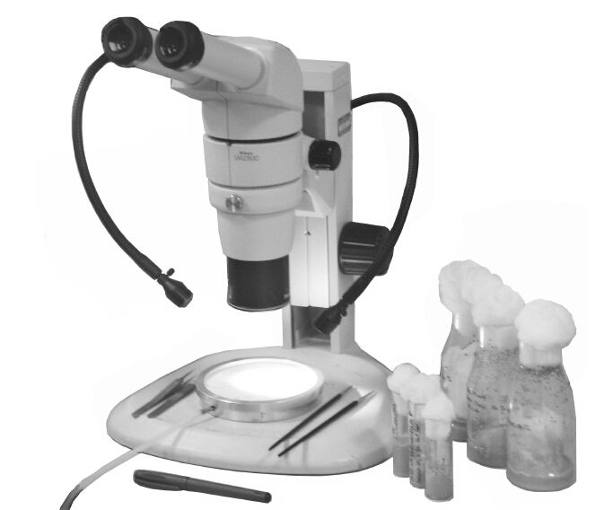

性器官不发达的雌犊
人们很久以前便知道，在一对双生牛中，一头是正常的雌性，另一头则是“雌性”；后者往往没有生殖能力，称为freemartin（姑且意译为雄化雌犊）。雄化雌犊的体外生殖器一般属于雌性，或者更近于雌性，不过已经证明其生殖腺也可能和睾丸相类似。Tandler和keller（1911）指出这种双生（其中有一头是雄化雌犊）是由两个卵子发育而成，Lillie（1917）已经完全证实了这件事实。Tandler和keller又指出了在子宫内这两个胚胎借着绒毛膜的连接，建立了循环上的联系（图141）。Magnussen（1918）描述过很多各种年龄的雄化雌犊，并且做了组织检查，来证明老龄雄化雌犊有着发育良好的睾丸状器官，也就是说，有着睾丸的特殊管状结构，包括睾纲管、性索和副睾在内。Chapin（1917）和Willier（1921）证实了这些观察，Willier更详细记载了卵巢从未分化时期进入睾丸状结构的转变过程。

图141 两个牛胎，其中一头将发育成雄化雌犊，两者的胎盘联合（仿Lillie）
Magnussen（误认雄化雌牛为雄性）在“睾丸”内没有看到精子。他相信这是睾丸留在腹腔内的结果（隐睾症）。我们知道，在睾丸正常下降到阴囊里的哺乳动物中，如果睾丸滞留在腹腔内，便没有精子，但是在早期胚胎里当睾丸仍在体腔内的时候，却出现了生殖细胞。根据Willier的记载，在雄化雌犊的所谓睾丸内，没有原始生殖细胞。
Lillie断定雄化雌犊是雌性，其生殖腺已经转变成睾丸状器官，Lillie的结论已经从上述证据得到这么有力的支持，以致没有怀疑的余地。至于这究竟是由于雄性血液成分的影响，还是像Willier所想的，由于血液内睾丸激素的影响，却是一个未决问题，因为目前无法证明雄胎生殖腺所产生的任何特殊物质，能够这样影响幼龄卵巢的发育。既然雄胎的一切组织都有雄性染色体组合，它的血液在化学成分上也同样可以和雌性血液不同，因而影响了生殖腺的发育。大家公认，幼龄的生殖腺含有卵巢和睾丸两种原基，或者像Willier所说的，在雄化雌犊生殖腺内所发生出来的各种雄性结构的原基，在性别分化时，便存在于卵巢之内。以上观察中最主要的事实是：雄化雌犊没有雄性生殖细胞。双生公牛血液的影响没有引起原始卵细胞向产生精子的细胞方面转变。哺乳动物，包括人类在内，常常有兼备雌雄两性器官，甚至包括卵巢和睾丸在内的个体。过去把这种个体称为雌雄同体（即俗称阴阳人），现在则称之为性中型。产生它们的情况还不知道。Crew报道过山羊25例，猪7例（注：Pick等早已描述过这样的个体，马有两个例子，绵羊有一个例子，牛有一个例子。）。Crew相信，既然它们都有睾丸，所以它们都是改变了的雄性。Baker最近报道，在某些岛上（新赫布里底群岛）性中型极为普通，“一个人差不多在每一个小村落都找得到它们”。根据他的报道，性畸型的趋势在某些例子里借雄性遗传。Baker认为它们多半是转变了的雌性（注：Prange描述过四头雌雄同体的山羊，有雌性体外性器，但乳腺不发达。它们的性行为和毛色则和雄性相同。体内有雄性和雌性导管，不过生殖腺却是睾丸（隐睾症）。
Harman女士描述过一只雌雄同体的猫，其左侧有睾丸，右侧有卵精巢。左侧的生殖器官和普通雄猫的相同，右侧的生殖器官则和普通雌猫的相同，只有输卵管的体积等是例外。）。

观察果蝇用的显微镜（高雅提供）